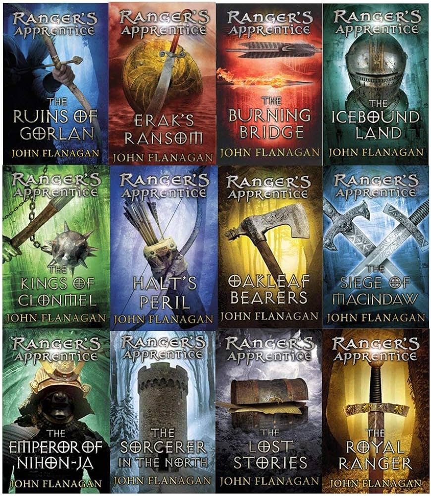
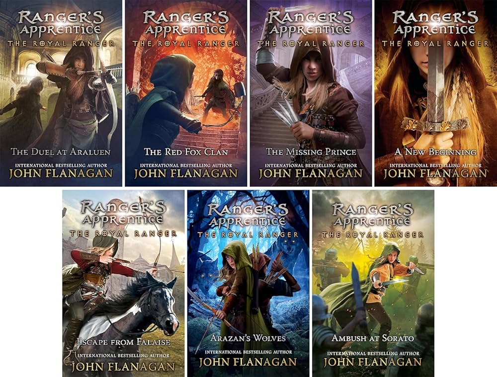
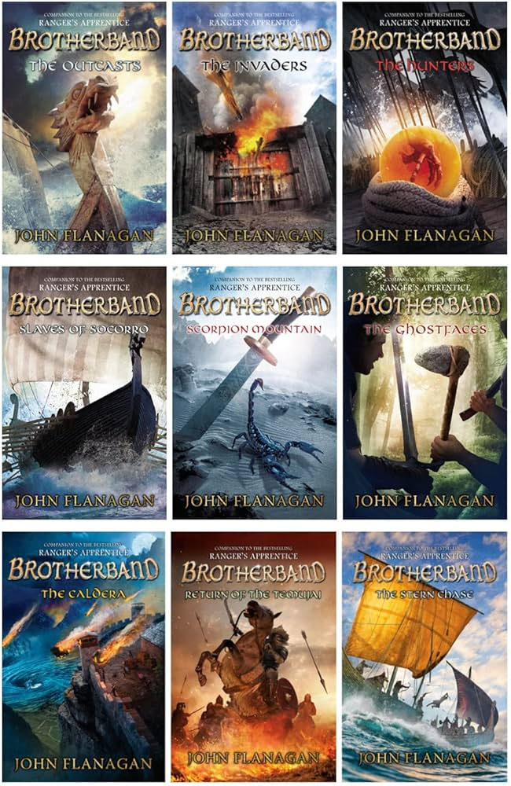
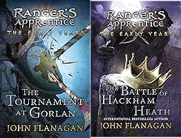

- Ranger's Apprentice
- The original series, a total of twelve books. The first ten detail Will's journey through his apprenticeship and further successes as a Ranger. The eleventh is an anthology of short stories that were discovered by characters in the far future. The twelfth returned to the original time period but instead follows Will's apprentice, beginning a sequel series that is still being written.

- The Royal Ranger
- This series of five books, still ongoing, follows Will's apprentice Madelyn through her own path as a Ranger and a princess of Araluen. Her challenges include being the first female Ranger, an overprotective set of royal parents, and the weighing depression of her mentor and friend.
|

- Brotherband
- A companion series of nine books, still ongoing, that follows Hal, a young viking inventor, through the adventures of him and his crew. The outcasts in their village, the boys push through a youth competition and progress to adventuring through many seas. This series tends to keep itself separate from the Ranger books, though characters have stepped between books a few times.

- The Early Years
- A duology that follows Will's mentor Halt through his prime Ranger days, reforming the scattered Ranger Corps and unveiling a scheme to destroy the kingdom.
|